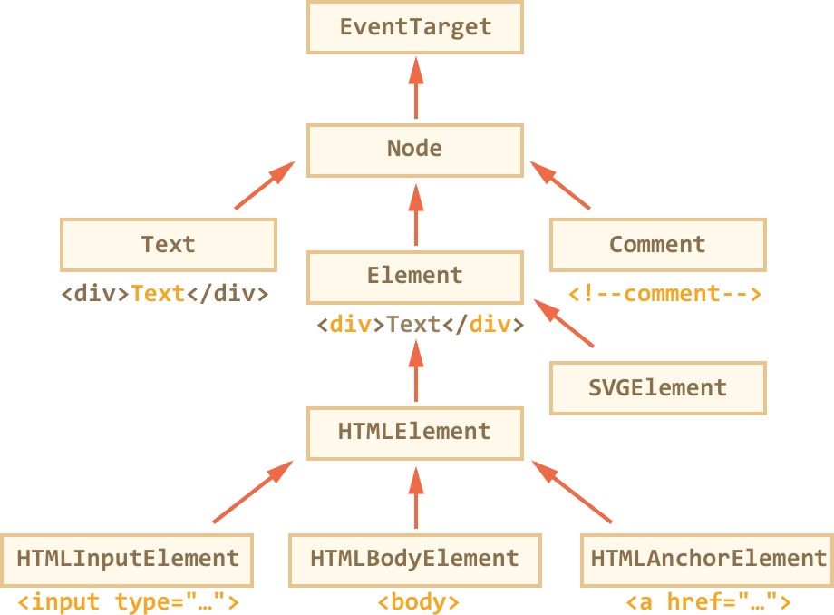
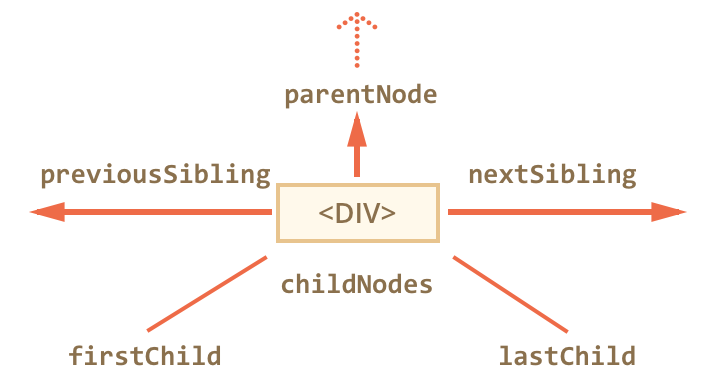
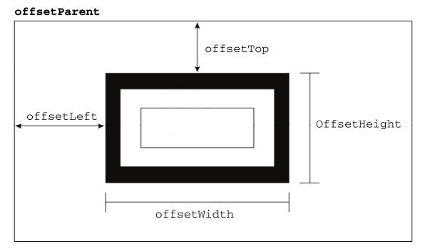
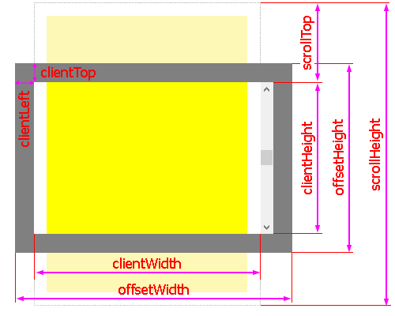

Document Object Model (DOM)
Tanya Samal
The Document Object Model (DOM) is a cross-platform and language-independent application programming interface that treats an HTML, XHTML, or XML document as a tree structure where in each node is an object representing a part of the document.
©WikiDOM class hierarchy
Check the inheritance
alert( document.body instanceof HTMLBodyElement ); // true
alert( document.body instanceof HTMLElement ); // true
alert( document.body instanceof Element ); // true
alert( document.body instanceof Node ); // true
alert( document.body instanceof EventTarget ); // trueTypes of DOM nodes
- Element nodes (HTML tag)
- Text nodes
- Attribute node
<!DOCTYPE html>
<html lang="en">
<head>
<title>My Title</title>
</head>
<body>
<h1>A heading</h1>
<a href="/">Link text</a>
</body>
</html>

Navigation between nodes
- parentNode
- childNodes
- firstChild
- lastChild
- nextSibling
- previousSibling

Node creation
<body>
<span>Today's date is </span>
<script>
const span = document.createElement("span");
span.textContent = new Date().toDateString();
document.body.appendChild(span);
</script>
</body>
DOM Node Methods
parentElem.appendChild(elem);parentElem.insertBefore(elem, nextSibling);parentElem.removeChild(elem);parentElem.replaceChild(elem, currentElem);DOM Element
properties
- element.attributes
- element.children
- element.id
- element.name
- element.innerHTML
- element.classsList
DOM Element
methods
elem.getElementById(id)elem.getElementsByName(name)elem.getElementsByTagName(tagName)elem.getElementsByClassName(className)elem.querySelector(cssSelector)elem.querySelectorAll(cssSelector)Example
const element1 = element.querySelectorAll("p");
const element2 = element.querySelector("a");
const element3 = element.querySelector("div.note");
const element4 = element.querySelectorAll("#test");
const element5 = element.querySelectorAll("li[data-active=1]");Getting, Setting, and Removing Attributes
element.getAttribute(attr)
<img src="https://example.com/cat.png">const animal = document.querySelector("img");
console.log(animal.getAttribute("src")); //https://example.com/cat.pngelement.setAttribute(attr, value)
const animal = document.querySelector("img");
animal.setAttribute("alt", "This is a picture of a cat.");
//<img src="https://example.com/cat.png" alt="This is a picture of a cat.">element.removeAttribute(attr)
const animal = document.querySelector("img");
animal.removeAttribute("alt"); //<img src="https://example.com/cat.png">Dynamically Applying Styles to Elements
<div>This is sample text.</div>const div = document.querySelector("div");
const style = getComputedStyle(div, null);
console.log(style);HTMLElement
properties
- offsetParent
- offsetLeft
- offsetTop
- offsetHeight
- offsetWidth

Element
properties
- clientTop
- clientLeft
- clientWidth
- clientHeight
- scrollWidth
- scrollHeight
- scrollLeft
- scrollTop
